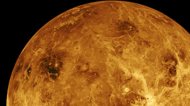
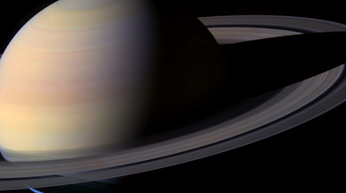
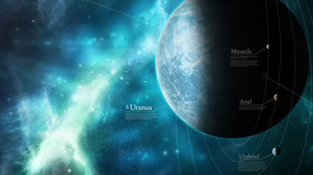
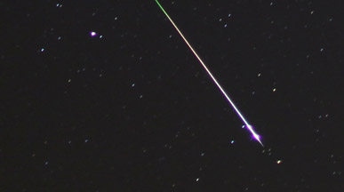

-
OCT 20 All day

Orionids Meteor Shower
Comet Halley can be blamed for this meteor shower. Every meteor that's part of the orionid meteor shower is one small piece of this comet. Circling the Sun every 76 years, comet Halley refreshes his dirt path fairly regularly.
-
OCT 23 19:38 - 23:52 UT

Partial Solar Eclipse
This partial solar eclipse starts in Eastern Russia and across the Bering sea in Alaska at 19.38 UT. The most interesting part - the maximum eclipse - will take place at 21:44:31 UT in Canada's Nunavut Territory near Prince of Wales Island.
-
OCT 23 22:40 - 22:45 UT
Venus occultation
Observation and broadcasting conditions of this Venus occultation could not have been worse. On AstronomyLive our goal is to list every astronomical event there is. Both the big and the small. Sometimes however, we already know certain conditions are going to be far from optimal.
-
OCT 25 22:40 - 22:45 UT
Saturn occultation
Saturn will be covered by the lunar surface today. Broadcasting conditions are medium (7). Area of visibility covers entire West of Europe, together with Iceland, Greenland and the North-East corner of Canada. This is the best occultation to see in the upcoming 4 years.
-
NOV 4 08:00 - 17:00 UT
Uranus occultation
Uranus will be again the candidate for lunar occultation. Not the first time this year however, but the 5th. And after this one still 3 other opportunities to come! Occultations can be predicted using various kinds of software otherwise I wont be telling you about this event. However timing of this type of event sometimes exhibits some variation and results should not be taken literally.
-
NOV 17 All day
Leonids meteor shower
Leonids meteor streams are groups of meteoroids originating from dust grains ejected from Comet 55P Tempel-Tuttle. These small dust grains (meteoroids) are distributed along the parent comet's orbit concentrated close to the comet nucleus with fewer grains farther away from the nucleus.